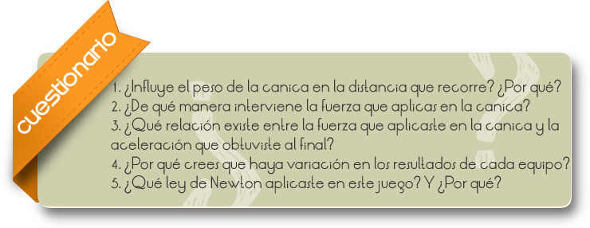

Recárgate en la pared. ¿Sientes un apretón en el hombro o en la mano con la que te recargas? ¿Quién te está dando ese apretón? Cuando te recargas en la pared estás ejerciendo una fuerza sobre ella. La pared al mismo tiempo ejerce una fuerza sobre ti: es el apretón que sientes en el hombro o en la mano. Cuando ejerces una fuerza sobre un objeto, el objeto reacciona ejerciendo una fuerza sobre ti. Las fuerzas suelen venir en parejas.
En estas parejas de fuerzas se puede distinguir una fuerza que actúa sobre un objeto y otra que es la respuesta de ese objeto a la fuerza que siente. Se les llama fuerza de acción y fuerza de reacción.
Observar la tercera ley de Newton a través del juego de canicas.
En el patio de tu escuela organiza un concurso de canicas.
En el patio de tu escuela organiza un concurso de canicas.
Mide la masa de cada canica en la balanza y selecciona las que tengan la misma o parecida para que la competencia sea equitativa.
Traza con un gis una línea que marque el inicio de la competencia. Asegúrate de que todos tiren desde ahí impulsando la canica con un dedo. Pinta otra línea a una distancia de dos metros, que será la meta.
Usa una canica por equipo y libera el camino para que no haya nada que obstruya su paso.
Cada equipo debe medir el tiempo que tarda su canica en llegar a la meta. Haz esto varias veces para poder obtener un dato promedio.
Calcula la velocidad promedio de tu canica.
Si sabes que inicialmente la velocidad de la canica es cero, calcula su aceleración, considerando la velocidad promedio como la final.
Como conoces la aceleración, puedes calcular la fuerza. Cada equipo obtendrá un dato diferente. Ganará el que obtenga un mayor valor.
Es importante que revises bien los datos y el procedimiento que uso cada equipo, y compruebes que son correctos.

Comentarios
En la Ley de acción y reacción fuerte, las fuerzas, además de ser de la misma magnitud y opuestas, son coloniales. La forma fuerte de la ley no se cumple siempre Ley de acción y reacción fuerte de las fuerzas.
En particular, la parte magnética de la fuerza de Lorentz que se ejercen dos partículas en movimiento no son iguales y de signo contrario. Esto puede verse por cómputo directo. Dadas dos partículas puntuales con cargas q1 y q2 y velocidades  , la fuerza de la partícula 1 sobre la partícula 2 es:
, la fuerza de la partícula 1 sobre la partícula 2 es:
Donde d la distancia entre las dos partículas y es el vector director unitario que va de la partícula 1 a la 2. Análogamente, la fuerza de la partícula 2 sobre la partícula 1 es:

Empleando la identidad vectorial  , puede verse que la primera fuerza está en el plano formado por y que la segunda fuerza está en el plano formado por y
, puede verse que la primera fuerza está en el plano formado por y que la segunda fuerza está en el plano formado por y  . Por tanto, estas fuerzas no siempre resultan estar sobre la misma línea, aunque son de igual magnitud.
. Por tanto, estas fuerzas no siempre resultan estar sobre la misma línea, aunque son de igual magnitud.